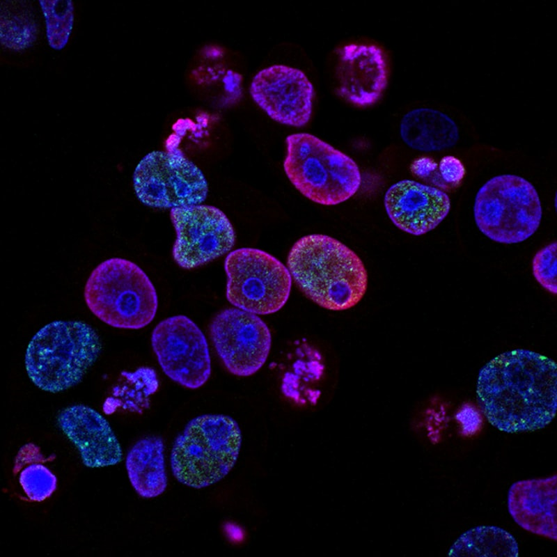
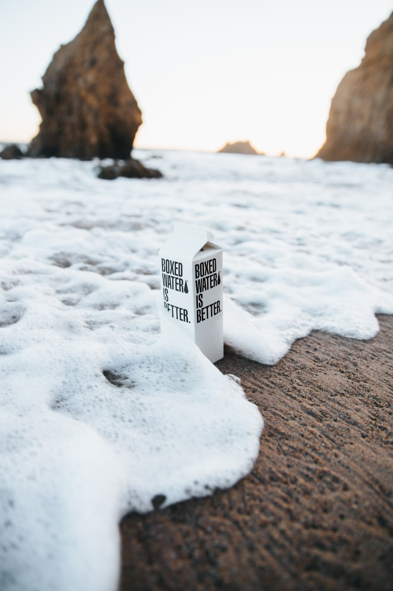

By SCWS Team
January 30, 2026 · 12 min read
Got a positive bacteria test? Time to shock chlorinate. This powerful disinfection process kills bacteria, viruses, and other microorganisms that may have contaminated your well. Whether you're dealing with coliform bacteria, recovering from flooding, or just completed well repairs, proper shock chlorination is your first line of defense for safe drinking water. Here's exactly how to do it right.
When to Shock Chlorinate Your Well
Unlike municipal water systems that continuously treat water, private wells rely on natural filtration and occasional disinfection. Shock chlorination is needed in specific situations:
Required Situations
1. Positive Bacteria Test
The most common reason for shock chlorination is a water test showing coliform bacteria or E. coli. While total coliform doesn't always indicate illness-causing bacteria, it suggests contamination pathways exist and disinfection is needed.
2. After Well Work or Repairs
Any time the well is opened, bacteria can be introduced:
- Pump installation or replacement
- Well inspection or camera work
- Drop pipe or wire repairs
- Pressure tank replacement
- Well rehabilitation
3. After Flooding or Surface Water Intrusion
If floodwater reached your wellhead or surface water entered the well, immediate disinfection is critical. Floodwater carries dangerous bacteria and contaminants.
4. New Well Construction
All newly drilled wells should be disinfected before use. This removes bacteria introduced during drilling and development.
5. Property Purchase
When buying a property with an existing well, shock chlorination before use is a wise precaution, especially if the well's history is unknown.
6. Extended Non-Use
Wells that haven't been used for months (vacation properties, seasonal homes) should be disinfected before resuming use, as stagnant water can harbor bacteria.
Signs You May Need Disinfection
- Sudden change in water taste or smell
- Cloudy or murky water
- Gastrointestinal illness in household members
- Slime or biofilm in toilet tanks
- Sulfur smell (may indicate bacteria, not just minerals)
Important: Always test your water before disinfecting if you suspect contamination. This establishes a baseline and helps determine if the problem is bacterial or requires different treatment.
What You'll Need
Gather these supplies before beginning the shock chlorination process:
Chlorine Source
- Household bleach: Regular, unscented, 5.25-8.25% sodium hypochlorite (NO splash-free, scented, or color-safe varieties)
- Or calcium hypochlorite: Pool shock (65-70% available chlorine) is more concentrated
- Or well disinfection tablets: Specifically designed for well chlorination
Safety Equipment
- Chemical-resistant gloves (rubber or nitrile)
- Safety glasses or goggles
- Old clothes that can get bleach spots
- Adequate ventilation
Tools and Supplies
- Clean 5-gallon bucket
- Garden hose long enough to reach bottom of well
- Funnel (optional, for pouring)
- Screwdriver or wrench for well cap removal
- Measuring cup
- Flashlight
- Chlorine test strips (pool test strips work)
Calculating Chlorine Amount
The amount of chlorine needed depends on your well's water volume. Here's how to calculate:
Step 1: Determine Well Volume
Use this formula based on well casing diameter:
Gallons of Water per Foot of Well Depth
- 4-inch casing: 0.65 gallons per foot
- 5-inch casing: 1.0 gallons per foot
- 6-inch casing: 1.5 gallons per foot
- 8-inch casing: 2.6 gallons per foot
- 10-inch casing: 4.1 gallons per foot
- 12-inch casing: 5.9 gallons per foot
Example: A 6-inch well that's 200 feet deep with water standing at 50 feet from the top has 150 feet of water. 150 × 1.5 = 225 gallons of water in the well.
Step 2: Calculate Bleach Needed
For household bleach (5.25% sodium hypochlorite):
- Use 3 pints (1.5 quarts) per 100 gallons of water in the well
- For 8.25% bleach, use 2 pints per 100 gallons
- Target concentration: 100-200 ppm chlorine
Example: For 225 gallons: (225 ÷ 100) × 3 pints = 6.75 pints (about 3.4 quarts or 0.85 gallons of bleach)
Quick Reference: Bleach Amounts (5.25%)
- 100 gallons water: 3 pints bleach
- 200 gallons water: 6 pints (3 quarts) bleach
- 300 gallons water: 9 pints (1.1 gallons) bleach
- 500 gallons water: 15 pints (1.9 gallons) bleach

Step-by-Step Shock Chlorination Process
Preparation
- Bypass water treatment equipment: Turn off and bypass water softeners, carbon filters, UV systems, and reverse osmosis units. Chlorine will damage these systems.
- Notify household members: No one should use water during the disinfection process (12-24 hours).
- Plan for alternative water: Have bottled water available for drinking and minimal needs.
- Gather supplies: All items listed above.
- Check weather: Don't chlorinate before expected heavy rain that could cause flooding.
Step 1: Turn Off Power to Pump
Switch off the circuit breaker for your well pump. This prevents the pump from running while you're working on the well.
Step 2: Remove Well Cap
Carefully remove the well cap or sanitary seal. Note how it's installed for proper replacement. Inspect the cap—if it's damaged, cracked, or not sealing properly, plan to replace it.
Step 3: Mix Chlorine Solution
- In a clean bucket, mix the calculated amount of bleach with 2-3 gallons of water
- Never pour concentrated bleach directly into the well
- Mix in a well-ventilated area
- Wear gloves and eye protection
Step 4: Pour Solution into Well
Carefully pour the chlorine solution into the well, trying to coat the inside of the casing as you pour.
Step 5: Circulate the Chlorine
This critical step ensures chlorine reaches all parts of the well:
- Turn pump power back on
- Connect a garden hose to an outdoor faucet
- Run the hose back into the well
- Turn on the faucet and circulate water back into the well for 15-30 minutes
- This recirculates chlorinated water, reaching the pump and lower areas
- Also wash down the inside of the well casing with the hose
Step 6: Chlorinate the Plumbing
- Turn off circulation hose
- Open each faucet in your home (hot and cold) one at a time
- Let water run until you smell chlorine
- Then turn off that faucet
- Include: all sinks, showers, tubs, washing machine, dishwasher, outdoor faucets
- Flush toilets to get chlorine into toilet tanks and supply lines
Step 7: Let Chlorine Work
- Replace the well cap securely
- Turn off power to pump (optional, prevents accidental use)
- Wait minimum 12 hours—24 hours is better
- Do not use any water during this time
- This contact time is essential for killing bacteria

Step 8: Flush the System
- Restore pump power if turned off
- Connect garden hose to outdoor faucet away from septic system, landscaping, or streams
- Run water until chlorine smell is gone (may take several hours)
- Use test strips to verify chlorine is below 0.5 ppm
- Once outdoor water is clear, flush indoor faucets (start with cold, then hot)
Septic System Note: The chlorinated water flushed down indoor drains enters your septic system. Modern septic systems can handle the typical amount from one shock chlorination, but avoid excessive flushing. Direct most flushing to an outdoor hose away from the septic field.
Step 9: Reconnect Treatment Equipment
Once chlorine is fully flushed from the system:
- Remove bypass on water softener and other equipment
- Regenerate water softener
- Replace any carbon filters
- Return UV system to service
Step 10: Retest Water
Wait 7-14 days after chlorination, then test your water for bacteria. This waiting period allows any remaining bacteria to repopulate if the source wasn't eliminated—an immediate clear test might not indicate long-term success.
Safety Considerations
Personal Safety
- Never mix bleach with other chemicals: Especially ammonia or acids—creates toxic gases
- Work in ventilated areas: Chlorine fumes are harmful
- Wear protective equipment: Gloves and eye protection are essential
- Keep children and pets away: During entire process
- Rinse splashes immediately: Concentrated bleach burns skin
System Protection
- Bypass all water treatment equipment: Chlorine damages softener resin, carbon filters, and RO membranes
- Drain water heater after flushing: Remove any sediment stirred up by chlorine (optional)
- Don't over-chlorinate: Excessive concentrations can damage pump seals and rubber gaskets
Environmental Considerations
- Don't discharge chlorinated water into streams, ponds, or stormwater systems
- Keep flushing water away from garden plants and landscaping
- Avoid saturating septic drain field with excess water
- Let heavily chlorinated water sit in sunlight before disposal—chlorine dissipates
When to Call a Professional
While shock chlorination can be a DIY project, certain situations warrant professional help:
Call a Professional When:
- Bacteria returns after chlorination: This indicates a contamination source that needs to be found and fixed
- You can't access the well properly: Sealed or buried wells require professional equipment
- Deep wells (300+ feet): May require special mixing methods
- You're uncomfortable with the process: Mistakes can damage your system
- You have health concerns: Vulnerable household members need safe water
- Repeated contamination: The source needs to be identified
- After flooding: May need inspection for damage along with disinfection
What Professionals Provide
- Accurate assessment of well volume
- Proper chlorine concentration
- Professional-grade disinfectants
- Well inspection during the process
- Identification of contamination sources
- Follow-up testing
- Recommendations for long-term solutions
If Bacteria Persists
If bacteria returns after shock chlorination, the contamination source hasn't been eliminated. Common causes include:
- Damaged well cap or seal: Allowing surface water entry
- Cracked well casing: Needs repair or liner installation
- Shallow well construction: May need deepening or surface sealing
- Nearby contamination source: Septic system, animal waste, etc.
- Aquifer contamination: May require continuous treatment
A professional well inspection can identify the source. Long-term solutions may include UV disinfection systems, continuous chlorination, or well repairs.
Frequently Asked Questions
How often should I shock chlorinate my well?
Routine shock chlorination isn't necessary for most wells. Disinfect your well when: you receive a positive bacteria test, after any well repair or pump work, after flooding or surface water intrusion, if water develops an odor or taste change, when purchasing a property with an existing well, or if the well hasn't been used for extended periods.
How much bleach do I need to shock chlorinate my well?
Use 3 pints of regular unscented household bleach (5.25% sodium hypochlorite) per 100 gallons of water in your well. For a typical 6-inch diameter well, this equals about 1.5 gallons of water per foot of depth. A 100-foot well with 6-inch casing holds approximately 150 gallons, requiring about 4-5 pints of bleach. Always verify calculations for your specific well.
How long does chlorine need to sit in the well?
The chlorine solution should remain in the well for a minimum of 12 hours, though 24 hours is preferred for thorough disinfection. During this time, do not use any water from the well. The chlorine needs time to contact and kill bacteria throughout the system. After the waiting period, flush until chlorine odor is gone before using water.
Is shock chlorination safe for my well and plumbing?
When done correctly with proper concentrations, shock chlorination is safe for most wells and plumbing systems. However, high chlorine concentrations can damage some rubber seals, gaskets, and certain filter media. Bypass water softeners and carbon filters during the process. Septic systems can handle the chlorinated flush water in moderation.
Need Professional Well Disinfection?
Whether you need your well shock chlorinated after repairs, want professional disinfection after a bacteria test, or need help identifying a contamination source, we're here to help. Our technicians provide thorough well disinfection with follow-up testing throughout Southern California.